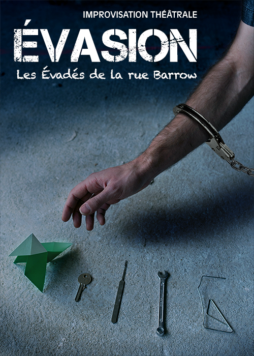

<!DOCTYPE html>
<html>
  <head>
    <meta charset="utf-8" />
    <title>Les Évadés de la rue Barrow</title>
    <link href="http://netdna.bootstrapcdn.com/font-awesome/4.0.3/css/font-awesome.css" rel="stylesheet">
    <link rel="stylesheet" href="static/css/evades.css"  type="text/css"/>
    <meta name="keywords" content="évadés, rue barrow, improvisation, improvisation théatrale, Paris, troupe" />
    <meta name="description" content="Les Évadés de la rue Barrow sont une troupe d'improvisation theatrale parisienne. Nous faisons des spectacles sur Paris et participons des événements dans toute la France." />
  </head>
  <body>
    <script type="text/x-handlebars" data-template-name='application'>
      <div class="container body-evades">
        </img>
        <div class="clearfix"><br /></div>
        <div class="collapse navbar-collapse navbar-inverse">
          <div class="container">
            <ul class="nav navbar-nav">
              {{#link-to 'index' tagName='li'}}<a href="#">Actualités</a>{{/link-to}}
              {{#link-to 'about' tagName='li'}}<a href="#">À propos</a>{{/link-to}}
              {{#link-to 'shows' tagName='li'}}<a href="#">Spectacles</a>{{/link-to}}
              {{#link-to 'escapees' tagName='li'}}<a href="#">Les Évadés</a>{{/link-to}}
              {{#link-to 'videos' tagName='li'}}<a href="#">Vidéos</a>{{/link-to}}
              {{#link-to 'contact' tagName='li'}}<a href="#">Contact</a>{{/link-to}}
              {{#link-to 'accomplices' tagName='li'}}<a href="#">Nos complices</a>{{/link-to}}
            </ul>
          </div>
        </div>
        <div class="clearfix"><br /></div>

        {{outlet}}

        <hr/>
        <div class="footer">
          <a target="_blank" href="http://twitter.com/EvadesBarrow" class="btn btn-default btn-social-icon btn-twitter">
            <i class="fa fa-twitter"></i>
          </a>
          <a target="_blank" href="http://facebook.com/EvadesBarrow" class="btn btn-default btn-social-icon btn-facebook">
            <i class="fa fa-facebook"></i>
          </a>
          <div class="pull-right"><h4>Oserez-vous devenir leur complice ? &nbsp;&nbsp;&copy; 2016</h4></div>
        </div>
      </div>
    </script>

    <script type="text/x-handlebars" data-template-name='index'>
        <div class="hero-unit hero-unit-evades text-with-small-margin">
          <div class="spectacle">
            <h1>En Corps</h1>
            <div>
              </img>
              <p>Dès lors que le public entre…quelque chose peut se raconter. Ce qui est là, au-delà de la raison, au-delà de la conscience.</p>
              
              <p>Des murs, une scène, des corps, des lumières, des mots, des notes de musique… les comédiens s'en emparent, et deviennent les messagers de ce qui doit advenir… les mouvements se répètent, entrent en résonance… une sensation, une crispation, un souffle, un son…et puis une peur, un sourire, un conflit, un désir…</p>
              
              <p>Chaque élément de réalité vient ouvrir la porte à un extrait. L'extrait d'une histoire, d'un instant de vie, d'un rêve. Ce qui est là, ce que l'on est.</p>
              
              <p>En Corps est un voyage dans l'inconscient, une tentative de nommer l'innommable, de rendre visible l'invisible, de partager ce que l'on vit et ce que l'on a à se dire, sans le savoir mais parfois aussi sans se le dire…</p>
              
              <p>Un moment entièrement improvisé de partage, de poésie et de vie…</p>
              
              <p>Avec Cécile Huré, Chloé Sirot, Alice Béchu, Claire Demont, Charlotte Campana, Jean Brunier, Thomas Gambier, Emmanuel Ruas, Rémi Foucal</p>
              
              <p>Musiciens : Assaf Matityahu, Thomas Rousson, Bernard Delvaux</p>
              
              <p>Création et mise en scène collectives, sous la direction de Yann Anquetin</p>
              <br />
            </div>
            <br />
            <h4>jeudi 2 mars 2017 – 21h30</h4>
            <h4>vendredi 3 mars 2017 – 21h30</h4>
            <h4>samedi 4 mars 2017 – 21h30</h4>
            <br />
            <p>Spectacle au théâtre Pixel</p>
            <address>
              <strong>Théâtre Pixel</strong><br>
              18 rue Championnet<br>
              75018 Paris<br>
            </address>
            <p>Réservez sur <a href="http://www.billetreduc.com/181413/evt.htm">Billet Reduc</a>, au 01 42 54 00 92 ou par mail à <a href="mailto:contact@ruebarrow.fr">contact@ruebarrow.fr</a></p>
            <p>Tarifs&nbsp;:<br/>
              <ul>
                <li>Réservation : 10€</li>
                <li>Sur place : 15€</li>
              </ul>
            </p>
          </div>

          <div class="spectacle">
            <h1>Évasion</h1>
            <div>
              </img>
              <p><em>"Je peux prendre n'importe-quel espace vide et l'appeler une scène. Quelqu'un traverse cet espace vide pendant que quelqu'un d'autre l'observe, et c'est suffisant pour que l'acte théâtral soit amorcé"</em> Peter Brook</p>

              <p>Dix improvisateurs. Dix personnes. Une rencontre. Un projet. Un cycle. Des répétitions. La répétition. Une exploration. L'instant. La conscience de la réalité. L'inconscient. L'inconscience. Le sens du présent. La sensation. Le mouvement. L'émotion. L'ennui. Le banal. L'attente. L'incompréhension. La surprise. L'excitation. La peur. Le risque. Le plaisir. Le jeu. L'image. Le mot. La réalité. L'imaginaire. Une frontière. Un équilibre. Un déséquilibre. Une traversée. L'objet. Le corps. Les corps. Le groupe. La musique. Le public. Le spectacle.</p>

              <p>On ne sait pas où est la forme. Quelle est la forme. On croit la voir. On se bat. On croit savoir…<br />
              L'insaisissable.</p>

              <p>Évasion. Un aboutissement, et une étape. Une création éphémère, à la fois modeste et ambitieuse, simple et complexe, libre et rigoureuse, possible et impossible. Une recherche de l'invisible, de l’évidence, de la vie.</p>

              <p>Avec Julie Douine, Mathilde Mir, Sophie Le Liboux, Jean Brunier, Emmanuel De Chavigny, Thomas Gambier, Rémi Foucal, Emmanuel Ruas, Mathias Le Borgne, Yann Anquetin</p>

              <P>Mise en scène collective</p>
              <br />
            </div>
            <br />
            <h4>jeudi 5 janvier 2017 – 21h30</h4>
            <h4>vendredi 6 janvier 2017 – 21h30</h4>
            <h4>samedi 7 janvier 2017 – 19h30</h4>
            <br />
            <p>Spectacle au théâtre Pixel</p>
            <address>
              <strong>Théâtre Pixel</strong><br>
              18 rue Championnet<br>
              75018 Paris<br>
            </address>
            <p>Réservez sur <a href="http://www.billetreduc.com/177327/evt.htm">Billet Reduc</a>, au 01 42 54 00 92 ou par mail à <a href="mailto:contact@ruebarrow.fr">contact@ruebarrow.fr</a></p>
            <p>Tarifs&nbsp;:<br/>
              <ul>
                <li>Réservation : 10€</li>
                <li>Sur place : 15€</li>
              </ul>
            </p>
          </div>

          <div class="spectacle">
            <h3>samedi 19 novembre 2016 : spectacle Évasion</h3>
            <p>Spectacle à 18h au théâtre Pixel</p>
            <address>
              <strong>Théâtre Pixel</strong><br>
              18 rue Championnet<br>
              75018 Paris<br>
            </address>
            <p>Réservez sur <a href="http://www.billetreduc.com/174665/evt.htm">Billet Reduc</a> ou au 01 42 54 00 92</p>
            <p>Enfermés dans une prison et condamnés à la vie à perpétuité, des détenus tentent de s'évader dans des mondes imaginaires et entièrement improvisés !</p>

            <p>Des murs, une scène, des corps, des lumières, des notes de musique, et vos objets...
            Chaque élément de réalité ouvre la porte à un imaginaire ou lorsque le moindre détail inspire une histoire, une image, une pensée, un rêve. </p>

            <p>Ce spectacle est la rencontre éphémère de 10 comédiens-improvisateurs, dans les méandres d'une forme improvisée en perpétuel mouvement.
            Évasion est une exploration de l'instant et de la liberté.</p>

            <p>Sensation, émotion, évasion... Oserez-vous être leur complice ?</p>

            <p>Mise en scène : Pauline Calmé</p>
          </div>

          <div class="spectacle">
            <h3>samedi 19 novembre 2016 : Atelier Évasion</h3>
            <p>6ème édition de l'atelier Évasion, au sein duquel 10 comédiens travaillent une journée ensemble et explorent une forme improvisée qui évolue à chaque édition, et qui est jouée le soir sur scène.</p>
            <p>Animé par Pauline Calmé.</p>
            <p>Axes de travail :
            <ul>
              <li>Écoute de l'instant présent, jouer avec ce qui est là, l'ici et le maintenant</li>
              <li>Ressenti de soi, de l'environnement, de l'autre, de ce qui se passe</li>
              <li>Sens, Sensation, Sentiment, où comment je navigue entre mon mouvement, mes sensations et les sentiments que ça crée chez moi pour alimenter mon personnage et la scène que je joue</li>
              <li>Ressenti, Objectif, Plaisir, Risque, où comment je me connecte à mon état pour sentir et comprendre les moments où le jeu est bloqué et où je vais à contre courant de ce que je veux jouer</li>
            </ul>
            </p>
            <p>Cet atelier s’adresse à des comédiens-improvisateurs expérimentés.</p>
            <p>Infos pratiques :
            <ul>
              <li>Pour vous inscrire, envoyez un mail à : <a mailto="contact@ruebarrow.fr">contact@ruebarrow.fr</a></li>
              <li>Tarif : 35 euros par personne, en chèque ou en espèces</li>
              <li>Atelier de 9h45 à 17h. Lieu à déterminer.</li>
              <li>L'atelier est suivi d'un spectacle à 18h au Théâtre Pixel, composé de deux sets de 30 minutes, avec 5 comédiens sur scène pour chaque set.</li>
            </ul>
            <p>
          </div>

        </div>
    </script>

    <script type="text/x-handlebars" data-template-name='shows'>
      <div class="hero-unit hero-unit-evades text-with-small-margin">
        <h2>Les Spectacles</h2>
        <br />
        <div class="text-small-font">
          </img>
          <h3>Évasion</h3>
          <p><em>"Je peux prendre n'importe-quel espace vide et l'appeler une scène. Quelqu'un traverse cet espace vide pendant que quelqu'un d'autre l'observe, et c'est suffisant pour que l'acte théâtral soit amorcé"</em> &nbsp; Peter Brook</p>

          <p>Dix improvisateurs. Dix personnes. Une rencontre. Un projet. Un cycle. Des répétitions. La répétition. Une exploration. L'instant. La conscience de la réalité. L'inconscient. L'inconscience. Le sens du présent. La sensation. Le mouvement. L'émotion. L'ennui. Le banal. L'attente. L'incompréhension. La surprise. L'excitation. La peur. Le risque. Le plaisir. Le jeu. L'image. Le mot. La réalité. L'imaginaire. Une frontière. Un équilibre. Un déséquilibre. Une traversée. L'objet. Le corps. Les corps. Le groupe. La musique. Le public. Le spectacle.</p>

          <p>On ne sait pas où est la forme. Quelle est la forme. On croit la voir. On se bat. On croit savoir... L'insaisissable.</p>

          <p>Évasion. Un aboutissement, et une étape. Une création éphémère, à la fois modeste et ambitieuse, simple et complexe, libre et rigoureuse, possible et impossible. Une recherche de l'invisible, de l’évidence, de la vie.</p>

          <P>Mise en scène collective</p>
          <br />
        </div>
        <div class="clearfix"><br /></div>
        <br />
        <br />
        <div class="text-small-font">
          </img>
          <h3>Cavale</h3>
          <p>Les Évadés sont en cavale, et tentent d'échapper à la police.</p>
          Des comédiens, un musicien, une scène, et vos mots …<br />
          Chaque mot ouvre la porte à un extrait.<br />
          L'extrait d'une histoire, d'un instant de vie, d'un rêve.</p>
          A vous, alors, de choisir celui que vous souhaitez voir se prolonger...</p>
          Émotion, tension, diversion... Oserez-vous être leur complice?</p>
          <br />
        </div>
        <div class="clearfix"><br /></div>
        <br />
        <br />
        <br />
        <div class="text-small-font">
          </img>
          <h3>En corps</h3>
          <p>Prochainement...</p>
          <br />
        </div>
        <div class="clearfix"><br /></div>
      </div>
    </script>

    <script type="text/x-handlebars" data-template-name='about'>
      <div class="hero-unit hero-unit-evades text-with-margin">
        <h2>Les Évadés de la rue Barrow <small>Troupe d'improvisation théâtrale</small></h2>
        <br />
        <p class="pull-right"><a href="static/pdf/dossier_presse_evades_barrow_2014.pdf">Télécharger notre dossier de presse<span class="glyphicon glyphicon-book"></a></span></p>
        <div class="clearfix"><br /></div>
        <br />
        <p>« Échappés » d'un cours d'improvisation théâtrale à Télécom Paris, rue Barrault, dix élèves décident en 2010 de fonder leur propre troupe d'improvisation : Les Evadés de la Rue Barrow.</p>
        S'inspirant du Cercle des Menteurs et des Flibustiers de l'Imaginaire, ils créent un format cabaret, Cavale, où les comédiens improvisent des extraits d'histoires qu'ils déroulent ensuite à partir de l'extrait choisi par le public. Des contraintes viennent alimenter le jeu, et colorer les différentes improvisations.</p>
        Entre 2010 et 2015, ce format est joué à de nombreuses reprises dans des bars et des festivals, et l'univers bien particulier des Evadés invite les spectateurs à devenir les complices de toutes leurs tentatives d'échapper à la police, et à s'évader avec eux.</p>
        Le renouvellement progressif des membres de la troupe pousse peu à peu celle-ci à repenser la ligne directrice de leurs improvisations, et réfléchir à d'autres champs de création.</p>
        Ils s'engagent en 2015 dans une exploration plus prononcée de l'instant présent, cherchant l'inspiration dans la réalité des corps et de l'environnement dans lequel ils jouent, et ouvrant une réflexion permanente quant à la place et l'impact du comédien qui se trouve derrière le personnage. Une nouvelle forme émerge : Evasion. </p>
        Des ateliers sont mis en place, comme des lieux de recherche et de rencontre où les membres de la troupe partagent avec d'autres improvisateurs le goût de l'expérimentation, de la poésie et de la scène.</p>
      </div>
    </script>

    <script type="text/x-handlebars" data-template-name='escapees'>
      <div class="hero-unit hero-unit-evades text-with-margin">
        <center>
          <div class="fotorama"
               data-loop="true"
               data-autoplay="true">
            
            
            
            
            
            
            
            
          </div>
        </center>
      </div>
    </script>

    <script type="text/x-handlebars" data-template-name='videos'>
      <div class="hero-unit hero-unit-evades text-with-margin">
        <h2>Nos vidéos</h2>
        <div class="spectacle ">
          <iframe width="640" height="360" class="center-block" src="http://www.youtube.com/embed/-cgKuPfvmqE" frameborder="0" allowfullscreen></iframe>
          <p style="text-align: center"><br />Faites tourner l'info : le rap des Évadés</p>
        </div>
        <div class="spectacle">
          <iframe width="640" height="360" class="center-block" src="http://www.youtube.com/embed/PF1d7DObdEM" frameborder="0" allowfullscreen></iframe>
          <p style="text-align: center"><br />Les Évadés à Nancy</p>
        </div>
        <div class="spectacle">
          <iframe width="640" height="360" class="center-block" src="http://www.youtube.com/embed/e7DqAgKIcrA" frameborder="0" allowfullscreen></iframe>
          <p style="text-align: center"><br />Les Évadés à Steenwerck</p>
        </div>
        <div class="spectacle">
          <iframe width="640" height="360" class="center-block" src="http://www.youtube.com/embed/52IBjRJci4w" frameborder="0" allowfullscreen></iframe>
          <p style="text-align: center"><br />Le teaser des Évadés 2013</p>
        </div>
      </div>
    </script>

    <script type="text/x-handlebars" data-template-name='contact'>
      <div class="hero-unit hero-unit-evades text-with-margin">
        <h2>Nous envoyer un mail</h2>
        <p>N'hésitez pas à nous envoyer un mail à <a href="mailto:contact@ruebarrow.fr">contact@ruebarrow.fr</a><br /><br /></p>

        <h2>Nous rencontrer en vrai</h2>
        <p>Vous pouvez nous rencontrer après un spectacle. Nous sommes toujours contents de discuter.<br /><br /></p>
      </div>
    </script>

    <script type="text/x-handlebars" data-template-name='accomplices'>
      <div class="hero-unit hero-unit-evades text-with-margin">
        <h2>Les lieux</h2>
        <ul>
          <li><a target="_blank" href="http://www.le-sonart.com">Le Sonar(t) (à Paris)</a></li>
          <li><a target="_blank" href="http://www.latelier44.org">L'Atelier 44 (à Avignon)</a></li>
          <li><a target="_blank" href="http://www.leclouduspectacle.com">Le Clou du Spectacle (à Nancy)</a></li>
          <li><a target="_blank" href="http://www.musee-steenwerck.com">Le musée de la vie rurale (à Steenwerck)</a></li>
          <li><a target="_blank" href="http://www.theatrepixel.fr">Le théâtre Pixel (à Paris)</a></li>
          <li><a target="_blank" href="http://theatredugouvernail.fr">Le théâtre du Gouvernail (à Paris)</a></li>
        </ul>

        <h2>Les personnes</h2>
        <ul>
          <li><a target="_blank" href="http://www.smoking-sofa.com">Smoking Sofa</a></li>
          <li><a target="_blank" href="http://atelier-oz.fr">L'Atelier Oz</a></li>
          <li><a target="_blank" href="http://about.me/jmguillaume">JM</a></li>
        </ul>

        <h2>Les événements</h2>
        <ul>
          <li><a target="_blank" href="http://www.avignonleoff.com">Avignon le Off</a></li>
          <li><a target="_blank" href="http://improfestival.jimdo.com">La semaine de l'impro (à Nancy)</a></li>
          <li><a target="_blank" href="http://www.leverderideau.free.fr/leverderideau">Le festival du lever de rideau (à Cabourg)</a></li>
          <li><a target="_blank" href="http://assos.utc.fr/festupic">Le festupic (à Compiègne)</a></li>
        </ul>
      </div>
    </script>

    <script src="http://code.jquery.com/jquery-1.11.1.min.js"></script>
    <script src="http://cdnjs.cloudflare.com/ajax/libs/handlebars.js/1.3.0/handlebars.min.js"></script>
    <script src="http://cdnjs.cloudflare.com/ajax/libs/ember.js/1.5.0/ember.min.js"></script>
    <script src="static/javascript/app.js"></script>
    <script src="bootstrap/js/bootstrap.js"></script>
    <!-- fotorama.css & fotorama.js. -->
    <link  href="http://cdnjs.cloudflare.com/ajax/libs/fotorama/4.6.3/fotorama.css" rel="stylesheet"> <!-- 3 KB -->
    <script src="http://cdnjs.cloudflare.com/ajax/libs/fotorama/4.6.3/fotorama.js"></script> <!-- 16 KB -->

  </body>
</html>
